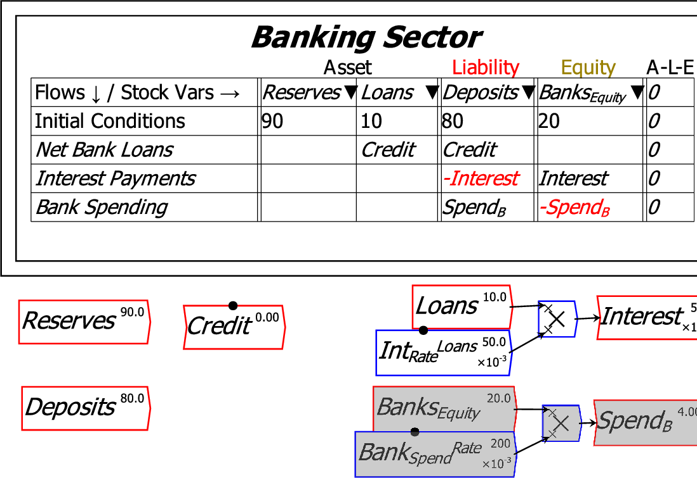
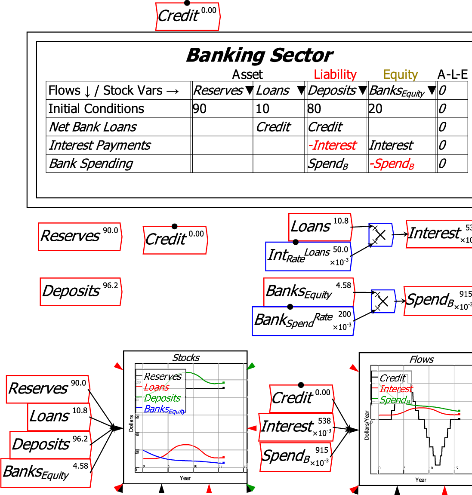
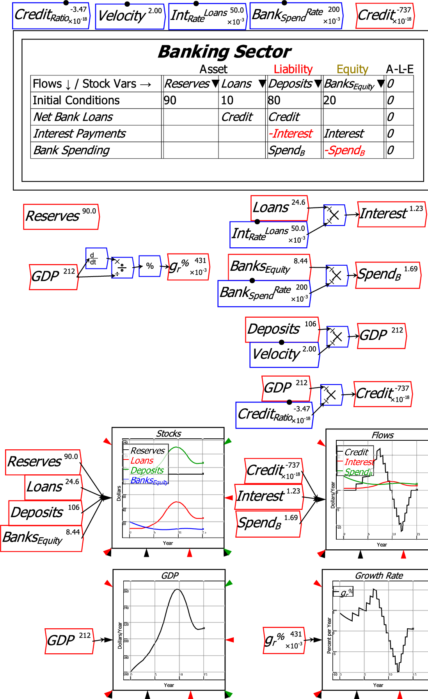
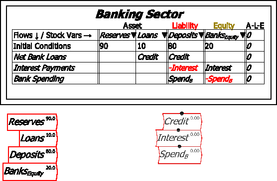
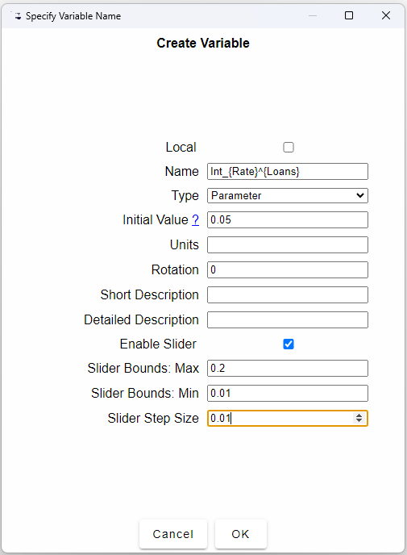
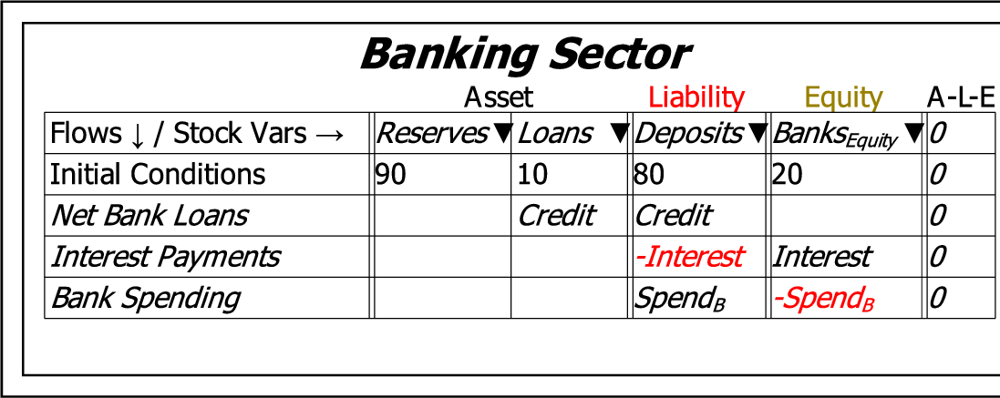
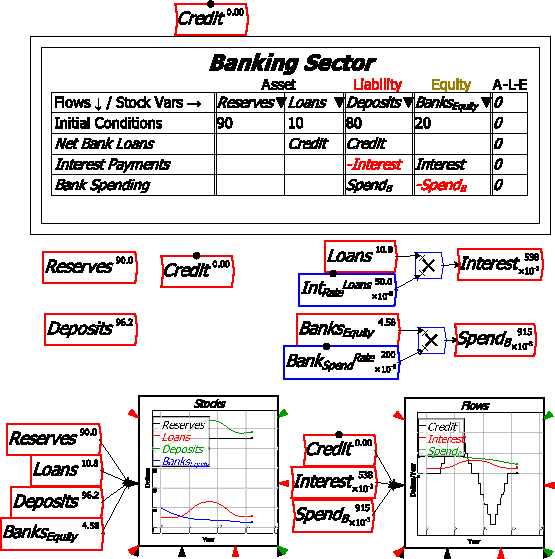
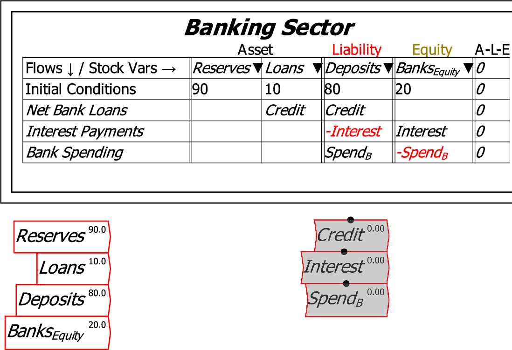
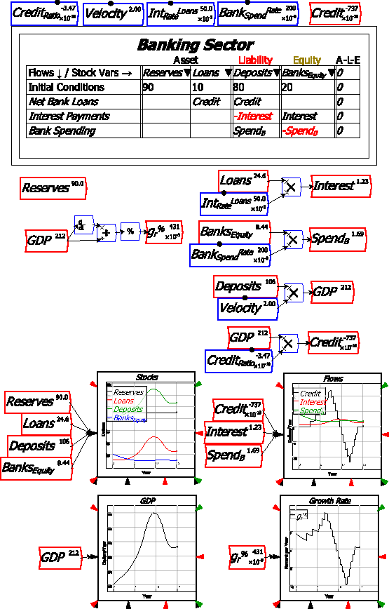

Add four Stocks to this table: Reserves and Loans as Assets, Deposits as a Liability, and BanksEquity as the Equity of the Banks (type Banks_{Equity} to subscript the word Equity). Go back to the Design canvas and choose ``Editor mode'' from the context menu, and you will see the table displayed as follows (you will need to resize the table using the Resizing arrows, which are visible when your mouse is hovering over the table)

Now enter numbers into the ``Initial Conditions'' row. Put 90 in Reserves, 10 in Loans, 80 in Deposits, and 20 in BanksEquity.

Then add three flows to the model: Net Bank Loans (which can be negative if people in the aggregate are paying their debts down rather than taking on new debt), Interest Payments, and Bank Spending. Call Net Bank Loans ``Credit'', Interest Payments ``Interest_L'' (the subscript is to distinguish interest on loans from interest on bonds, which we'll introduce later), and Bank Spending ``Spend_B'' (the subscript is to distinguish Bank Spending from Government Spending,which we'll introduce later).

Next, return to the canvas and use the Godley Table context menu commands Copy flow variables and Copy stock variables to copy all flows and stocks and place them on the canvas, where they can be defined.

The easiest flow to define is Interest, since this is the rate of interest times Loans. To define this, first define the parameter IntRateLoans: just type Int_{Rate}^{Loans} on the canvas and, once you've finished entering the text, the Variable/Parameter definition form will appear. Put 0.05 as the Initial Value, 0.2 as the Slide Bounds: Max, 0.02 as the Min, and 0.01 as the Slider Step Size.

Wire this parameter and Loans up to a multiply block  and attach it to the flow Interest, and you have defined the first of three flows in this extremely simple model.

Now define SpendB as a multiple BankSpendRate of the BanksEquity. Give the parameter a small Initial Value--say 0.2--which means that Banks spend 20% of their equity into the economy every year--this represents paying dividends, wages and bonuses to households, buying goods and services off firms, etc. Set Max to 0.5, Min to 0.1, and the Step Size to 0.05.
Your canvas should now look like this:

This is sufficient to build a model of just financial stocks and flows, if you edit Credit to give it a Max, Min and Step Size in keeping with the other magnitudes in the model-say a Max of 10, Min of -10, and Step Size of 1. Add two Plots , one for Stocks and one for Flows, attach the Stocks and Flows to their inputs, put a copy of Credit at the top of the model for ease of access, click on the Run button [ifgeo]100, and vary the value of Credit to see what happens:
![\includegraphics[width=\textwidth]{images/MonetaryModel01GodleyTable06Simulate01}% WIDTH=555 HEIGHT=559](img342.png)
To link this very simple model to economic concepts, make the ``Friedmanite'' assumption that GDP equals Money times Velocity. Define Money as the sum of Deposits plus BanksEquity, and define Velocity as a parameter with an Initial Value of 2, Max of 4, Min of 0.5, and Step Size of 0.1. Define a parameter CreditRatio and give it an Initial Value of 0, Max of 0.1, Min of minus 0.1, and Step Size of 0.01. Also define the percentage growth rate as the differential of GDP divided by itself and put through a percentage operator. Run the model and vary CreditRatio using the arrow keys as you run a simulation.

Much more sophisticated models can be built using Minsky, including models that mix the flowchart method with Godley Tables to generate models of both the physical and monetary systems.